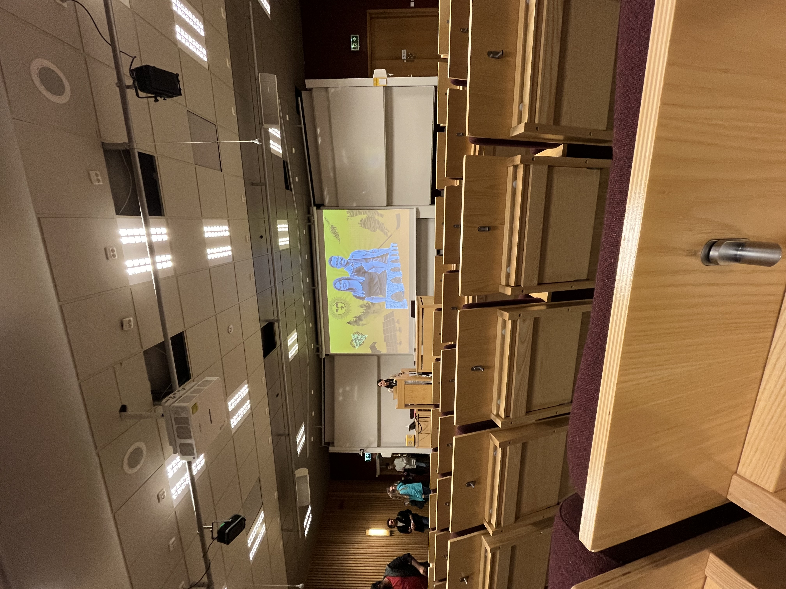
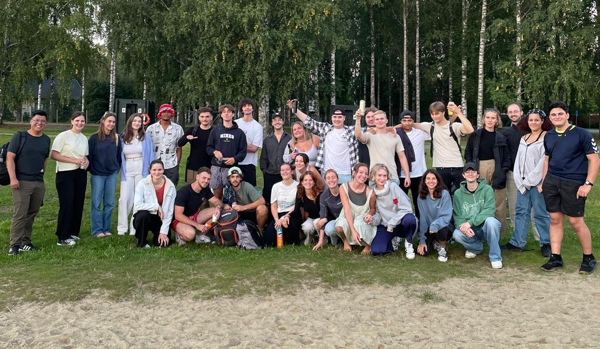

J’avais initialement fait le choix de partir en Suède afin d’en apprendre davantage sur le changement climatique et les solutions possibles, ce pays étant reconnu comme un modèle de gestion durable de ses ressources et des énergies. J’ai donc choisi de suivre, en plus des cours de suédois, des cours sur les énergies renouvelables et sur le changement climatique dans les pays nordiques.
J’ai immédiatement été frappée par le système éducatif suédois. En Suède, il y a très peu d’heures de cours en présentiel et la majorité du travail se fait en autonomie. L’université met à disposition des élèves des infrastructures modernes et adaptées telles que l’immense bibliothèque sur quatre étages dans laquelle la majorité des élèves passent leur journée à étudier. Le peu d’heures de cours en présentiel permet souvent d’introduire des notions ou d’évoquer des sujets, mais il est à la charge de l’élève de s'entraîner et de s’exercer sur ces notions.
Dans le cadre de mes cours, et en particulier celui portant sur le changement climatique dans les pays nordiques, j’ai pu m'entraîner sur des exercices que je n’avais jamais faits avant, comme la rédaction d’articles scientifiques ou de dossiers. Les thématiques abordées sortaient également de ce que j’avais pu étudier auparavant : certaines notions, comme le lien entre culture et changement climatique ou encore le fonctionnement des bassins anaérobies permettant de produire de l’énergie à partir de la biomasse, m’ont particulièrement marqué par leur originalité et leur ancrage dans des problématiques concrètes.
J’ai particulièrement apprécié la façon suédoise de travailler qui laisse une grande liberté d’organisation aux étudiants. Aucun cours n’est obligatoire sauf quelques-uns qui sont spécifiquement mentionnés et les professeurs acceptent parfaitement que les élèves puissent travailler dans de meilleures conditions chez eux ou à la bibliothèque. De plus, l’angle sous lequel étaient abordés les sujets qu’il m’a été donnés d’étudier était original et la liberté dans le choix des sujets d’études me motivait bien plus à travailler. Un autre avantage est la diversité des étudiants avec lesquels j’ai pu travailler. Certains venaient de filières scientifiques (mécanique, thermodynamique, mathématiques, etc.) mais d’autres étaient en formation de droit ou encore en économie. Cette diversité m’a permis d’échanger avec des profils différents, ce qui n’est pas évident dans le monde des écoles d’ingénieurs.
Cependant, après avoir discuté avec des suédois, il m’est apparu, que le système suédois crée des élèves peu motivés et avec un niveau inférieur, par certains égards, à celui que j’ai pu observer dans les universités et écoles françaises. L’éducation suédoise a cette particularité de reposer sur l’autonomie et la curiosité des élèves. Cette particularité a de bons côtés, en cela qu’elle crée des personnes indépendantes et autonomes, et des mauvais côtés, en cela qu’elle crée des étudiants peut-être moins motivés et studieux à certains égards.
La formation que j'ai suivie en Finlande a été une expérience enrichissante et différente de ce que je connaissais à l'École des Mines. J'ai eu l'opportunité de suivre des cours très variés, tels que du management et l'écologie des forêts, des politiques de gouvernance des ressources naturelles ou encore de la bioéconomie des forêts européennes. Ces matières, absentes de mon cursus habituel, m'ont permis de diversifier mon parcours et d'élargir mes connaissances sur des sujets d'actualité et d'importance mondiale. Les étudiants dans ces cours avaient des profils très divers, et j'étais souvent l'une des rares étudiantes en ingénierie, ce qui a apporté un regard nouveau à mon expérience académique.
Les méthodes pédagogiques en Finlande sont également très différentes. La liberté donnée aux étudiants est totale, et j’ai beaucoup apprécié ce système basé sur la confiance. Les cours étaient souvent disponibles en présentiel et en visioconférence simultanément, permettant aux étudiants de plusieurs campus de participer. Certains professeurs allaient même jusqu'à enregistrer les sessions et les publier en ligne, laissant aux élèves la possibilité de visionner ou revoir les cours à leur convenance. De plus, très peu de cours étaient émargés, car ils considèrent les étudiants comme des adultes responsables de leur propre apprentissage.
Le système d’examens était également très bien pensé. Les examens se faisaient en ligne dans des salles spécialement équipées avec des caméras anti-triche, disponibles dans toutes les universités du pays. Le professeur donnait généralement une semaine pour passer l’examen, et il suffisait de s’inscrire dans une salle selon ses disponibilités. Ce système, qui offre une grande flexibilité tout en garantissant l'intégrité des épreuves, m’a vraiment impressionnée. De plus, des séances de rattrapage étaient organisées deux à trois fois par matière, et cela était vu de manière très bienveillante. Contrairement à ce que l’on peut ressentir ailleurs, aller au rattrapage n’était pas stigmatisé, mais plutôt encouragé pour permettre à tous de progresser.
En dehors des cours, la vie étudiante était également très agréable. Le campus proposait de nombreuses activités pour intégrer les étudiants, et les associations étudiantes faisaient preuve d’une grande ouverture, notamment envers les Erasmus. Les relations avec les professeurs et l’administration étaient marquées par la bienveillance et une grande accessibilité, ce qui m’a beaucoup aidée dans mon adaptation. Dans l’ensemble, cette expérience m’a non seulement permis de découvrir une nouvelle approche pédagogique, mais aussi de mieux comprendre les valeurs d’autonomie, de flexibilité et d’entraide qui animent le système éducatif finlandais.
Une expérience assez amusante que j'ai vécue pendant mon séjour en Finlande a été liée à un petit incident : j'ai cassé mes lunettes de vue et, ne pouvant pas en acheter de nouvelles sur-le-champ, j'ai dû aller en cours avec mes lunettes de soleil, faute de pouvoir lire autrement. Cette situation m’était déjà arrivée en France, et à chaque fois, j'avais eu droit à des remarques de la part de mes professeurs, qui me demandaient de retirer mes lunettes, estimant que ce n’était pas respectueux et cela devenait assez pénible de devoir leur expliquer constamment la situation. En Finlande, cependant, il n'y a eu aucune remarque. Les professeurs n’y ont vu aucun problème et n’ont jamais considéré cela comme un manque de respect. C’était un soulagement de ne pas avoir à me justifier à chaque fois et de constater qu'on respectait ma situation sans jugement. Cela reflète bien l'attitude ouverte et non contraignante que j'ai trouvée dans l'approche pédagogique et sociale des Finlandais, où la liberté individuelle est réellement valorisée.
Selon moi, le principal défaut du système éducatif finlandais est que, malgré sa flexibilité et son approche axée sur l’autonomie, le niveau général est globalement plus bas qu’en France, notamment dans les matières scientifiques comme les mathématiques et la physique. En discutant avec un professeur de mathématiques sur place, il m’a confié que ses élèves avaient souvent des difficultés et que leur niveau était relativement faible.
D’un point de vue personnel, j’ai trouvé que ce système me convenait parfaitement en tant qu’étudiante Erasmus. Grâce à cette liberté, j’ai pu voyager, profiter du pays tout en suivant mes cours à distance, et avoir du temps pour d’autres activités. Mon expérience en classe préparatoire m’a aussi beaucoup aidée : j’avais déjà l’habitude de travailler de manière autonome et efficace sans supervision, ce qui m’a permis de bien gérer mes études.
Par ailleurs, j’ai été surprise de la facilité avec laquelle j’ai pu valider certaines matières que je n’avais jamais étudiées auparavant, comme la biologie, la science des forêts ou encore la politique environnementale. Je m’attendais à devoir fournir un gros effort pour rattraper mon retard par rapport aux autres étudiants, mais finalement, avec un travail raisonnable, j’ai obtenu d’excellentes notes. Cela m’a confirmé que les exigences académiques, en tout cas dans certaines disciplines, étaient moins élevées qu’en France.
Cela dit, je partage totalement l’avis d’Elisa sur les points positifs de ce modèle éducatif. Il encourage l’autonomie, la curiosité et permet aux étudiants motivés de s’épanouir pleinement dans leurs études. Cependant, cette grande liberté peut aussi être un inconvénient pour ceux qui ont du mal à s’organiser seuls ou qui ont besoin d’un cadre plus structurant pour progresser.
Je pense que le système éducatif français aurait beaucoup à gagner en s’inspirant des modèles scandinaves. Actuellement, il est très exigeant, mais laisse peu de place à la flexibilité et à l’épanouissement personnel. À l’inverse, les pays nordiques misent sur l’autonomie, mais parfois au détriment du niveau académique. Trouver un juste milieu entre ces deux approches permettrait de combiner rigueur et liberté, afin de mieux accompagner les élèves tout en développant leur indépendance et leur motivation.
Copyright © 2024 Created by Paola Le Morvan. All Rights Reserved.